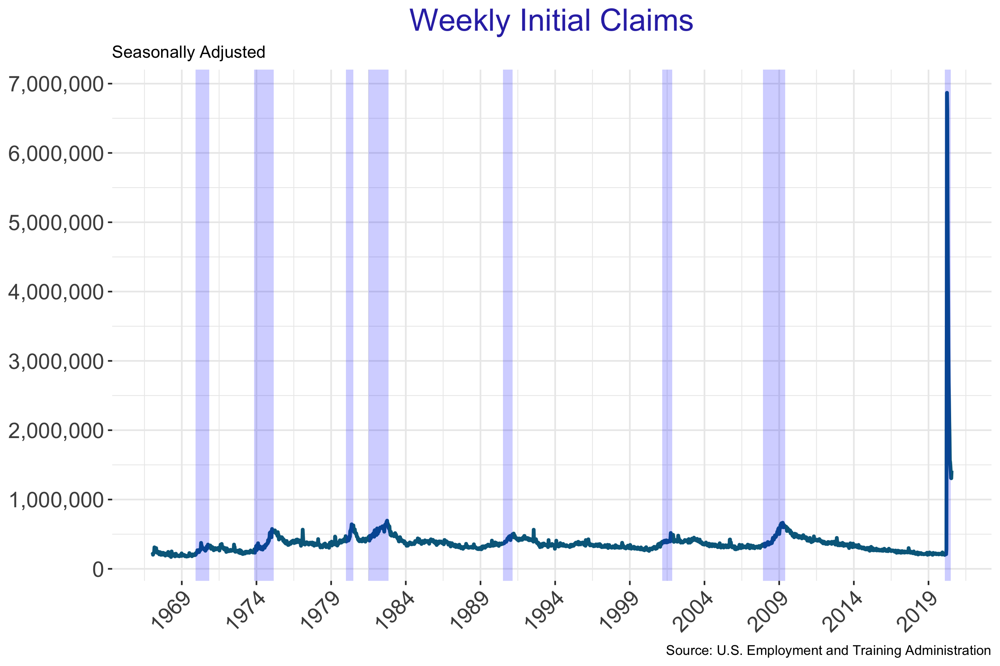
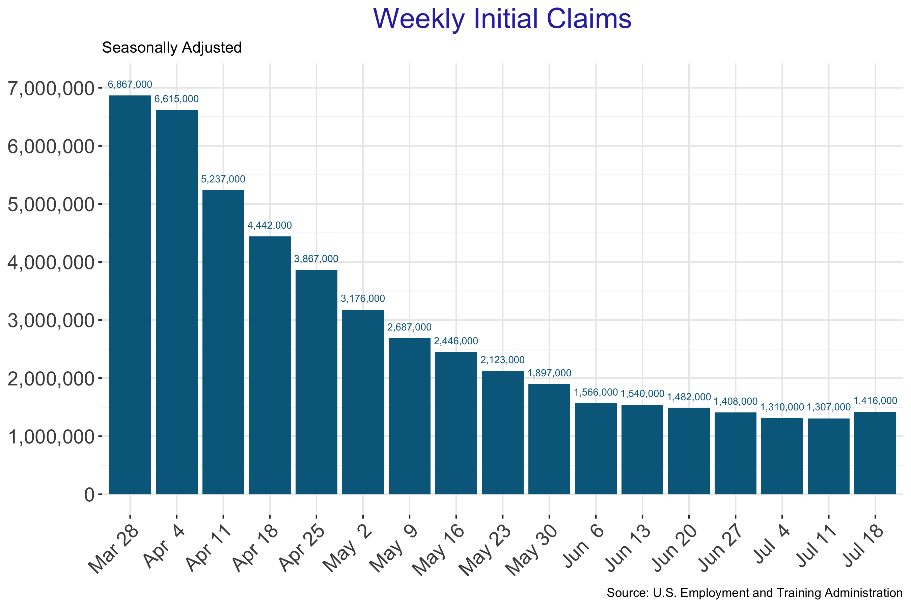
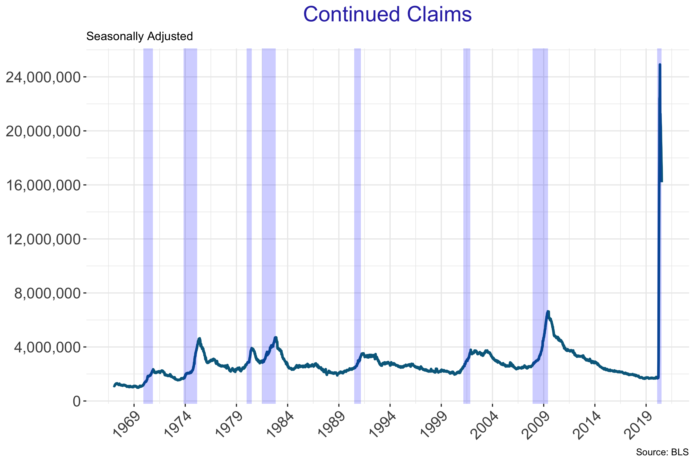
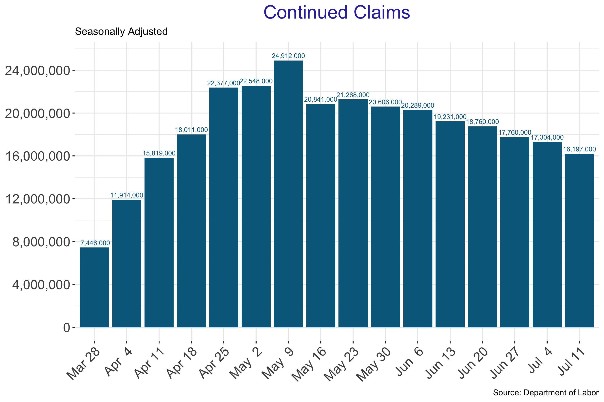
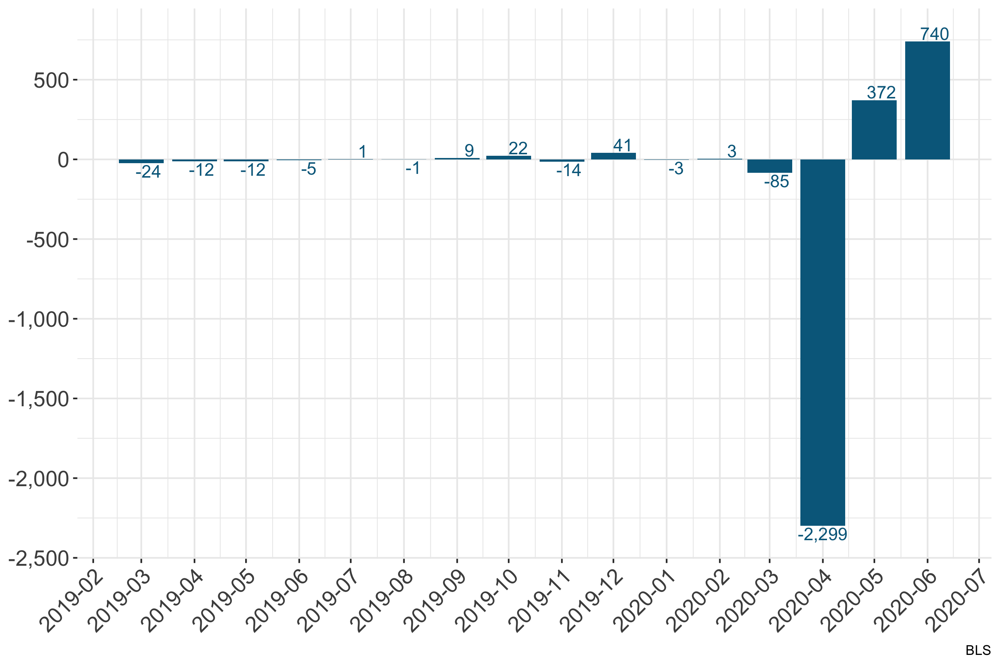
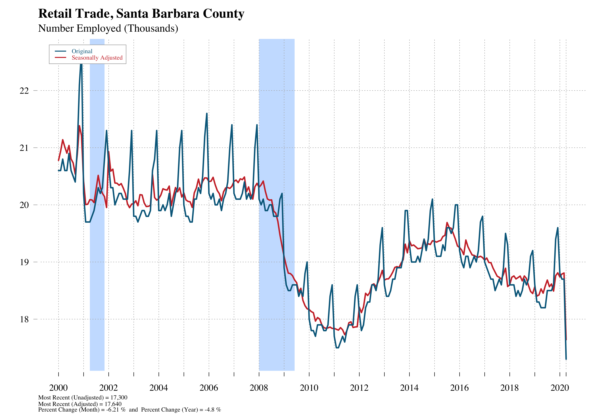

Chapter 1 Director’s Message 2020
Everything was going so well until…COVID-19. The recovery since the Great Recession was the longest expansion in our history, lasting about ten years. Indeed, the National Bureau of Economic Research declared the recovery was over in February, 2020, meaning the US entered a recession as of February, 2020.
The economic data released since February dwarf anything ever seen in economic data. The pandemic led many governments around the world to react in similar ways, by shutting down large sectors of economic activity, though often with different timing. While government lockdowns can occur with the stroke of a pen, governments will not be able to force workers or consumers to restore their lives with a similar stroke of the pen. That is, both producers and consumers will decide on their own when they feel safe to return to normality. The main question on the minds of many is will the recovery from the pandemic be “V-shaped” or will the economy rebound slowly, “U-shaped” or erratically, say “W-shaped” or some other letter?
The early effects on the labor market were catastrophic. The depth and suddeness are easily shown yet hard to comprehend. The first thing that happened during the lockdown was a loss of jobs in sectors deemed “non-essential,” such as retail, bars, restaurants, gyms, and so on.
The shutdown led job losers to contact their state’s employment department to make an initial claim for unemployment insurance. Not all who apply are qualified, however, and so are unable to receive unemployment insurance. Yet, there were tens of millions who made claims for unemployment compensation over the past few months. Initial claims in Santa Barbara County typically averaged between 400-600 per week before the pandemic. On March 28 there were 11,135 initial claims followed by 9,589 the following week. The initial claims for unemployment in Santa Barbara County also jumped into never-before-seen territory. Here are the recent numbers, January: 2,522, February: 1,469, March: 17,246 and April: 22,262. The March and April numbers were more than ten times their typical average. The April number indicates that of the roughly 200,000 employed in March, 11% of them made initial claims for unemployment insurance. To understand the magnitude of the effect of the pandemic, note that employment in Leisure and Hospitality and Retail combined in April was about 33,000.

Unemployed persons who received unemployment insurance and remained unemployed for the subsequent week can apply for additional unemployment insurance and enter the category called “continued claims.” It is clear that the unprecedented claims overwhelmed many state systems with California being the first to ask for Federal assistance.

The devastation was felt in nearly every sector with some sectors hit harder than others. Workers in restaurants, bars and retail establishments were among the hardest hit. However, as these sectors began to open many of the workers were able to rejoin quite quickly. The graphs below highlight the massive decline and the beginnings of a recovery and, for some, looks V-like. Retail sales fell precipitously as did employment in that sector.

In Santa Barbara, employment in the Leisure and Hospitality sector fell 40% between March and April. While Retail Trade saw a 7.5% overall decline in employment the Clothing and Clothing Accessories Stores component fell 44%.


We are in the midst of a major pandemic with no real end in sight. The impacts have been devastating. The government mandated shutdowns have hit nearly every sector of our economy. Policy responses have been massive. CARES and PPP have sent trillions of dollars to many of those affected. It is not clear at this point how much more will be needed to keep those in need afloat.